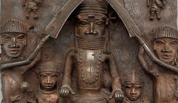
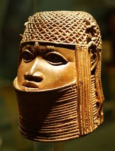

Fill in this form
Myself
My name is Ibrahim Robiat Yetunde
I turned 25 years old 27th of june and I am a software developer.
To discover my github account click Github.
To discover my linkedin account click Linkedln
I have a younger brother named Roqeeb. I have a group of friends at work
and out of them Manvi is my best friend. She visits my house at
weekends and we play outdoor games together. I believe in her and I can share anything with her.
Science and technology fascinate me so I took part in aninterschool science competition in which my team of 4 girls
worked on a 3-D model of the earth representing past, present, and future. It took us a week to finish off the project and we
presented the model at Ghaziabad school. We werecompeting against 30 teams and we won the competition.
I was confident and determined about the fact that we could win because my passion helped me give
my 100% input in the task. Though I have skills in certain subjects I don’t have to excel in everything,
I struggle to perform well in mathematics. And to enhance my problem-solving skills I used to study maths 2 hours a day.
I wanted to become a scientist, and being punctual and attentive are my characteristics as I
never arrive late for school. Generally, I do my work on my own so that I inculcate the value of being an
independent person. I always help other people when they are in difficult situations.
I reside in nigeria and one things that fascinates me about my culture is it art and culture
Arts and culture in nigeria
Nigerian versatility in art is so great that it is generally felt that all African nations should view
Nigeria as the principal trustee of the most durable fruits of black artistic genius. It is not precisely
known when the first works of Nigerian art reached the outside world, but in 1897, following a British punitive
expedition to Benin, over 2,000 Benin bronzes and ivories were shipped to England and later dispersed all over Europe and America.
At the National Museum in Lagos, works from all over the federation present a vivid picture of the national diversity
of arts and crafts. Today, the heritage and tradition of excellence in Nigeria arts continues and typified by the works of world renowned artists.
CULTURE
In the humanities, one sense of culture as an attribute of the individual has been the degree to which they have cultivated a particular level of sophistication in
the arts, sciences, education, or manners. The level of cultural sophistication has also sometimes been used to distinguish civilizations from less complex societies.
Such hierarchical perspectives on culture are also found in class-based distinctions between a high culture of the social elite and a low culture, popular culture, or folk culture
of the lower classes, distinguished by the stratified access to cultural capital. In common parlance, culture is often used to refer specifically to the symbolic markers used by
ethnic groups to distinguish themselves visibly from each other such as body modification, clothing or jewelry. Mass culture refers to the mass-produced and mass mediated forms of consumer culture that
emerged in the 20th century. Some schools of philosophy, such as Marxism and critical theory, have argued that culture is often used politically as a tool of the elites to manipulate the proletariat
and create a false consciousness. Such perspectives are common in the discipline of cultural studies. In the wider social sciences, the theoretical perspective of cultural materialism holds that human
symbolic culture arises from the material conditions of human life, as humans create the conditions for physical survival, and that the basis of culture is found in evolved biological dispositions.
Nok Culture
Evidence shows the Nok people had knowledge of iron smelting and adorned themselves with tin and stone beads, earrings, nose rings
and bracelets. The Nok Culture is dated between 500 B.C. and 200 A.D.
- Early Nok Period ceramics
- Middle Nok Period ceramics
- Late Nok Period ceramics
Brass or bronze
Casting is still done but there is nothing produced now to compare with the fabulous Ife and Benin Bronzes. These perfect examples of portraiture and
the "cire perdue" method of casting, together with the equally perfect terracotta, thought to be of the same period and possibly by the same
craftsmen, have no equals anywhere.
 
Grass Weaving
As grass is plentiful in the northern parts of Nigeria, northern craftsmen and women make grass baskets, fans, tables and floor mats. Some of the objects are beautifully coloured and durable.

FESTIVALS
Festivals in Nigeria, some of which dates back to the period before the arrival of the major religions in her ethnically and culturally diverse society. The Christian festivals and Islam festivals are often celebrated in ways that are unique to Nigeria or unique to the people of a locality. The Nigerian Tourism Development Corporation has been working with the states to bring more awareness and significance to the traditional festivals, which may become important sources of tourism revenue. There are more than 365 festivals in Nigeria according to the Minister of Information and Culture, Mr Lai Mohammed and government is working hard to harness these festivals as a way of showcasing and boosting the country's diverse cultures
List of festivals in nigeria
- Book festivals
- Port Harcourt Book Festival
- Lagos Book and Art Festival
- Kaduna Book And Art Festival
- Film festivals in Nigeria
- Abuja International Film Festival
- Africa International Film Festival
- Eko International Film Festival
Some other types of festivals include:
- Music festivals in Nigeria
- Calabar Carnival
- Nupe Day Festival
- Lagos International Jazz Festival
- Cultural festivals in Nigeria
- Omabe Festival
- Afan National Festival
- Eyo festival
THE DIFFERENCE BETWEEN A LINE ELEMENT AND A BLOCK ELEMENT
Block Elements:Block elements are HTML elements that typically start on a
new line and occupy the full width available.Some examples of block elements are div, header, p, section, ul, h1 and so on.
Line elements:line elements do not start on a new line and only occupy as much width as necessary. These elements are
displayed inline, allowing other elements to sit beside them on the same line.Some examples of line elements are em, a, strong, span and so on.